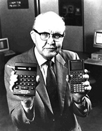

Der Nobelpreisträger für Physik (2000), Jack St. Clair Kilby von Texas Instruments baute den ersten I.C. (Integrierten Schaltkreis) auf einem Stück Germanium, das dünner als ein Zahnstocher und einen Zentimeter lang war, und 5 Komponenten besaß. Das Unternehmen "Planet Corporation" verkaufte den ersten kommerziell erhältlichen Roboter. Xerox bringt das erste Kopiergerät auf den Markt.